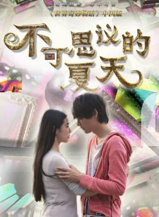

马思纯（Sandra），1988年3月14日出生于安徽省蚌埠市，毕业于中国传媒大学，中国内地影视女演员。
1995年，马思纯参演个人首部电影《三个人的冬天》。2000年，参演个人首部电视剧《大宅门》。2007年，因担任饶雪
漫小说《甜酸》的书模而为人所知。2011年，出演都市剧《摩登新人类》。2012年，凭借电影《岁月无声》获得中国电影表
演艺术学会金凤凰奖最佳新人奖 [1] 。
2015年，马思纯因出演青春片《左耳》获得第52届台湾电影金马奖最佳女配角提名 [2] ；同年，她还主演了悬爱剧《他
来了请闭眼》 [3] ；并出版了个人首本图文随笔集《如果有一件小事是重要的》 [4] 。2016年，凭借剧情片《七月与安生》获
得第53届台湾电影金马奖最佳女主角奖 [5] ；同年，她还凭借《左耳》获得了中国电影表演艺术学会金凤凰奖学会奖 [6] 。
2019年8月，连续两年入选福布斯中国名人榜并位列第61位。
1988年，马思纯出生于安徽蚌埠。七岁时她便出演了个人的首部电影作品《三个人的
冬天》。
2000年，马思纯参演了个人的首部电视剧《大宅门》，并在剧中饰演了少年白玉婷。
高一时马思纯随妈妈蒋文娟到北京定居，从那以后便一直和妈妈住在一起。
2007年，马思纯因担任饶雪漫小说《甜酸》的书模而被更多人所认识 [7] 。高考之
前，已经积累了一些演戏经验的马思纯报考了北电导演系，但并未成功。
随后，她听从妈妈的建议考入了中国传媒大学的播音系。大二的时候，马思纯被沈严
导演挑中出演电视剧《爸爸我怀了你的孩子》的女一号，她因此正式进入演艺圈发展 [11]
|
你是我的城池营垒 2020 饰演:米佧 导演:张彤 主演:白敬亭、王阳、姜珮瑶 |
加油，你是最棒的 2019-07-31 饰演:福子 导演:刘新 主演:邓伦、韩童生、倪虹洁 |
||
|
橙红年代 2018-09-17 饰演:胡蓉 导演:刘新 主演:陈伟霆、刘奕君、陈瑶 |
将军在上 2017-10-25 饰演:叶昭 导演:文杰、霍耀良 主演:盛一伦、王楚然、丁川 |
||
|
芈月传 2015-11-30 饰演:魏颐 导演:郑晓龙 主演:孙俪、刘涛、马苏 |
他来了，请闭眼 2015-10-15 饰演:简瑶 导演:张开宙 主演:霍建华、王凯、张鲁一 |
||
|
武媚娘传奇 2014-12-21 饰演:贺兰敏月 导演:高翊浚 主演:范冰冰、张丰毅、李治廷 |
 |
不可思议的夏天[62] 2014-08-08 饰演:沙织 导演:久保田哲史 主演:古川雄辉、王传君、叶祖新 |
|
|
爱情最美丽 2014-05-20 饰演:马晓灿 导演:张国立 主演:张国立、蒋雯丽、刘立 |
未婚妻 2013-10-26 饰演:蓝小依 导演:陈慧翎 主演:丹尼斯·吴、陈彦妃、法图麦·天缘 |
| 发布时间 | 影片名称 | 饰演角色 | 合作导演 |
|---|---|---|---|
| 2019 | 节拍知觉 | 女主角 | 未知 |
| 2018 | 时尚芭莎=不负 [63] | 女主角 | 未知 |
| 2017 | 豹姿魅影 | 女主角 | 未知 |
| 2015 | 天才告白 | 女主角 | 未知 |
| 2015 | 光 | 女主角 | 未知 |
| 2014 | 奇妙物语 | 纱织 | 久保田 |
| 出演时间 | 剧目名称 | 饰演角色 |
|---|---|---|
| 2016 | 如梦之梦 | 未知 |
| 2010 | 希尔斯堡 | 未知 |